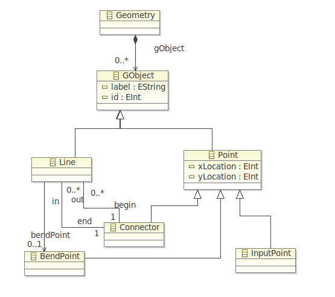
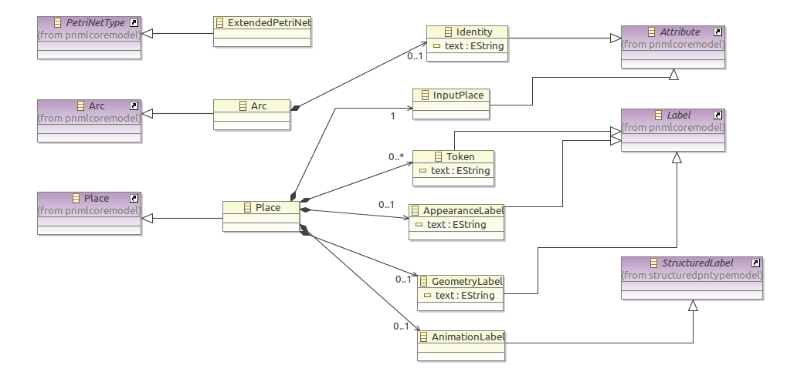
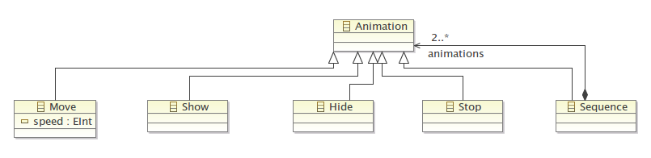

Petri net tutorials
Software Engineering 2
Tutorials
This presentation shows our work on the tutorials.
- What have we done
- What problems have we encountered
- What things are we going to use for our project
Tutorial 1: The basics
A view which presents informations about the file extension of the currently selected file.
Behind the scenes:
public class FileTypeView extends ViewPart implements ISelectionListener
Register the view as a listener to the workbench and this method will be called everytime the selection changes :
public void selectionChanged(IWorkbenchPart part, ISelection selection)
The core method.
public String[] getFileExtension(ISelection selection) {
if ( !(selection instanceof IStructuredSelection)) {
return null;
}
IStructuredSelection structuredSelection = (IStructuredSelection) selection;
String[] result = new String[structuredSelection.size()];
int i = 0;
for(Object o : structuredSelection.toArray()) {
if (o instanceof IFile) {
IFile file = (IFile) o;
result[i] = file.getName() + " is a " + file.getFileExtension() + "file";
} else if (o instanceof IFolder) {
IFolder folder = (IFolder) o;
result[i] = "Selected folder: " + folder.getName();
} else if (o instanceof IProject) {
IProject project = (IProject) o;
result[i] = "Selected project: " + project.getName();
}
i++;
}
return result;
}
Tutorials 2 & 3
A Petri Net Tree Editor
Based on the following model:

Enhanced with the Undo/Redo mechanism...
public FireTransitionCommand(EditingDomain domain, Transition transition) {
this.transition = transition;
// Run through all the incoming places and remove a token from them
for (Arc arc : transition.getIn()) {
Place source = (Place) arc.getSource();
//Here we create a Remove Command to remove one token from each source
append(new RemoveCommand(domain, source,
PetrinetPackage.eINSTANCE.getPlace_Tokens(), source
.getTokens().get(0)));
}
// Give a token to each outgoing place
for (Arc arc : transition.getOut()) {
Place target = (Place) arc.getTarget();
Token token = PetrinetFactory.eINSTANCE.createToken();
//Here we create a CreateChildCommand to add a token to each target
append(new CreateChildCommand(domain, target,
PetrinetPackage.eINSTANCE.getPlace_Tokens(), token, null));
}
}
..and the automatic identity
public CreatePObjectWIDCommand(EditingDomain domain,
EObject owner,
Command command) {
super(0);
this.domain = domain;
this.append(command);
Collection<?> collection = this.getResult();
PObject resultObject = null;
if (collection.iterator().next() instanceof PObject) {
resultObject = (PObject) collection.iterator().next();
}
int max = -1;
for (Object object: owner.eContents()) {
if (object instanceof petrinet.PObject) {
int currentId = ((petrinet.PObject) object).getId();
max = Math.max(max, currentId);
}
}
max = max + 1;
this.append(new SetCommand(domain, resultObject, PetrinetPackage.eINSTANCE.getPObject_Id(), max));
}
Tutorials 4 & 7
Graphical editor: Automatic generation GMF
Listeners: Extending a graphical editor
Tutorials 4 & 7

Tutorials 5 & 6
Extending ePNK
T5: Objectives
- To extend ePNK for including our group's features
- Geometry, Animation & Appearance
- To add constraints to ensure the validation of the model
T5: Extending ePNK
EMF model and diagram which represents our extensions.

Constraints validation
public class ArcValidator extends AbstractModelConstraint {
@Override
public IStatus validate(IValidationContext ctx) {
EObject eObject = ctx.getTarget();
if (eObject instanceof Arc) {
Arc arc = (Arc) eObject;
Node source = arc.getSource();
Node target = arc.getTarget();
if((source instanceof Place && target instanceof Place) ||
(source instanceof Transition && target instanceof Transition)) {
return ctx.createFailureStatus(new Object[] {arc});
}
}
return ctx.createSuccessStatus();
}
}
An arc can only connect a Place to a Transition or viceversa.
Animation model
Using this model, we autogenerated our own language
Our language with Xtext
move (10) ; show(L1) ; hide() ; [move(2) ; stop() ]
Example
Parse animation labels
Validate them
What we will use
- Tutorial 1, 2, 3 - General features for all editors
- Tutorial 5 and 6 - Petri net editor
- Tutorial 4 and 7 - Geometry editor